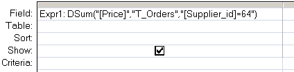

Return the sum of values from a specified set of records.
Syntax
Dsum ( expression, domain, [criteria] )
=DSum("[Field]", "Table", "[Field] = 'MyValue'")
Key
expression The field to return.
domain The set of records, a table or a query name.
criteria Equivalent to an (optional) WHERE clause.
Any field that is included in criteria must
also be a field in domain.
For numerical criteria use "abc=Num"
for strings use "abc='string'"
for dates use "abc=#date#"
The DSum() function can be used in VBA or in an SQL query.
Examples
In a query:

In VBA:
DSum("price", "T_Orders", "Supplier_ID = 64 ")
“The most important thing in an argument, next to being right, is to leave an escape hatch for your opponent, so that he can gracefully swing over to your side without too much apparent loss of face” ~ Sydney J. Harris
Related:
Sum (SQL) - Add up the values in a query result set